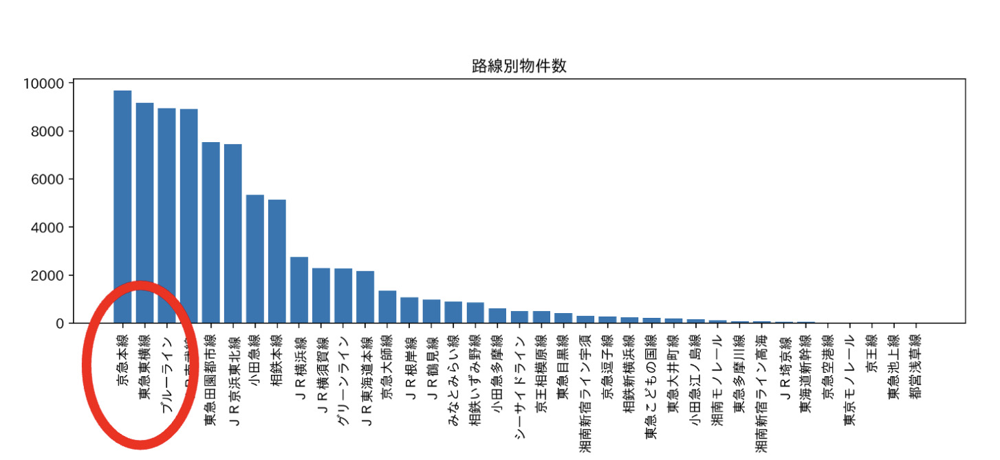
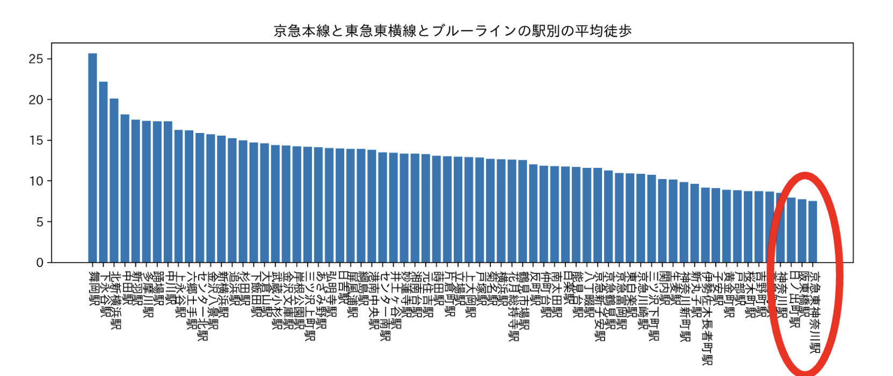
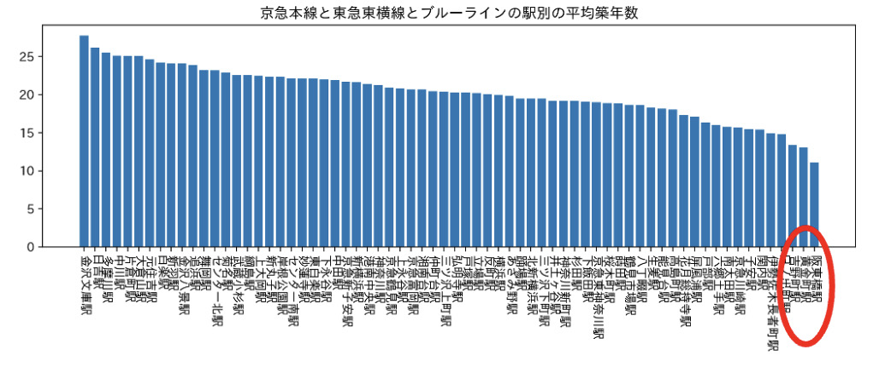
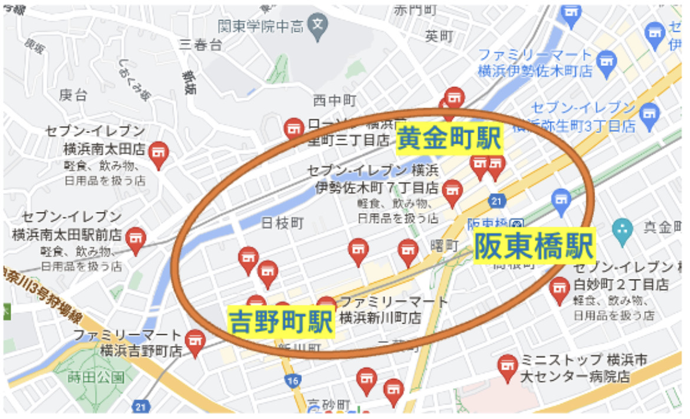

・築年数（新築含む）
・通学・通勤時間
・家賃・価格
・定期の安さ
・その地域の治安の良さ
・間取り（部屋の広さなど）
・設備・仕様
・路線・駅やエリア
・物件数が多い路線
物件選びが遅れている新入生に向けてなのでまず様々な条件の物件が揃っているであろう物件の多い路線上位3路線を調べました。結果は、京急本線、東急東横線、ブルーラインが物件の多い上位３路線であることが分かりました。

・路線と駅別の平均徒歩時間
次にまず物件を考えるうえで学生が遅刻したくないという事を考えると、駅近という条件は欠かせないと思うので、駅から家までの平均徒時間を調べました。このグラフでは、京急東神奈川駅、阪東橋駅、日ノ出町駅の３駅が平均徒歩時間が少ないという結果が得られました。

次に物件を考えるうえで衛生面、安全面、設備面を考慮したときに物件の築年数が大事だと思いした。
そこで３路線の物件の平均築年数を調べたところ阪東橋駅、黄金町駅、吉野町駅の３駅が平均築年数が低いという事が分かりました。

先ほど調査した築年数と徒歩時間を交えたグラフで築年数と徒歩時間をどちらも良い条件で満たしている駅を調べました。
結果として、阪東橋駅、黄金町駅、吉野町駅の順に良く条件を満たしているという事が分かりました。

まとめ
物件選びが遅れている新入生におすすめの駅は 1位、阪東橋駅（ブルーライン）2位、黄金町駅（京急本線） 3位、吉野町駅（ブルーライン）です。この3つの駅は家から最寄駅までの徒歩時間10分以内 築年数15年以内で厳選した中での上位３駅です。
各駅から横浜駅までの時間は阪東橋8分 黄金町6分 吉野町10分です。なので30分以内で学校に着くことが出来ます。

最初のページへ